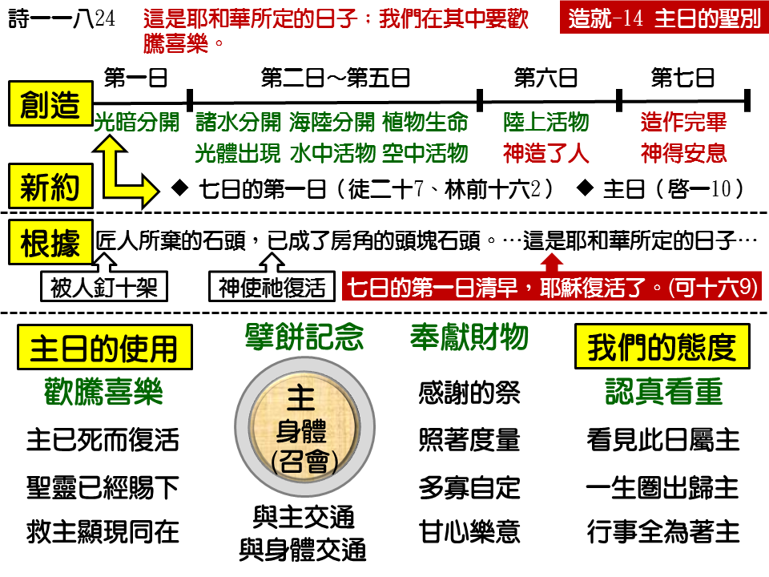

诗歌：174 首、178 首
重要经文：
启示录一章十节：当主日我在灵里，听见在我后面有大声音如吹号说，
诗篇一百一十八篇二十二至二十四节：匠人所弃的石头，已成了房角的头块石头。这是耶和华所作的，在我们眼中看为希奇。这是耶和华所定的日子；我们在其中要欢腾喜乐。
使徒行传二十章七节：七日的第一日，我们聚集擘饼的时候，保罗因为次日要起行，就与他们讲论，直讲到半夜。
纲目要点：
壹 主日不是安息日——路四16，太二八 1：
一 安息日是第七日－创二 3。
二 主日是七日的第一日－太二八 1，9，约二十 1，19。
贰 主日的根据——诗一一八24，启一 10。
叁 主日的使用：
一 欢腾喜乐——诗一一八 24。
二 擘饼记念——徒二十 7：
1 与主有交通。
2 与身体有交通。
三 感谢奉献——林前十六 1~2。
信息选读：
主日不是安息日
人如果不安息，就是表示他自己能够作工，自己能够有行为，就是表示不需要神的工作。神对于祂的工作是满意的，人守安息日的意思就是表明人对于神的工作也是满意的。人守安息日，就是人安息在神的安息里，人接受神的工作。所以，神在旧约中是命令说，在安息日无论何工都不可作。这是旧约所给我们看见的。 可是到了新约，那情形就不同了。主耶稣在安息日，到会堂里去念圣经，（路四16，）到会堂里去教训人，（可一 21，）使徒们也在安息日到会堂里去辩论讲道。（徒十七 1～3，十八4。）由此可见安息日不只有消极的休息，也有积极的使用。本来它是身体安息的日子，到了新约，它变作灵性追求的日子，这是一个进步。
主日的根据
行传四章十至十一节：“你们众人和以色列众百姓就当知道，乃是在拿撒勒人耶稣基督，就是你们所钉十字架，神从死人中所复活者的名里，在这名里，这人才站在你们面前健康完好。祂是你们匠人所轻弃的石头，已成了房角的头块石头。”十节说：你们将祂钉在十字架上，神却叫祂从死里复活。十一节说，“祂是你们匠人所轻弃的石头，已成了房角的头块石头。”换句话说，这成为房角的头块石头，就是主耶稣的复活。匠人弃绝祂的时候，就是主耶稣被钉在十字架的时候；神叫祂成了房角的头块石头的时候，就是神叫祂从死里复活的时候。所以“耶和华所定的日子”，就是主耶稣复活的日子。
在一周的里面，神特意把一天拣选出来；这一天，圣经给它起一个名字，就是启示录一章十节所说的“主日”。曾有人说“主日”就是圣经里所说的“主的日子”，其实不是。在原文里，“主日”和“主的日子”完全不同。“主日”是七日的第一日，“主的日子”是主再来的日子。二者是完全不同的。
主日的使用
所有神的儿女，在七日的第一日所应该有的态度，就是高兴欢喜。我们的主，从死里复活了。这是耶和华所定的日子，我们每逢这天都要高兴欢喜，都要维持这一个态度。这一个日子，是我们的主复活的日子，没有一个日子像这一个日子一样。七日的第一日，主向门徒显现，主与门徒聚集。五旬节圣灵降临，也是在七日的第一日。这是耶和华所定的日子，我们应当在其中高兴欢喜，这是自然而然的结果。
行传二十章七节说，“七日的第一日，我们聚会擘饼的时候…，”按原文的文法，这里的“七日的第一日”，不限定指着某一个七日的第一日，意思乃是每一个七日的第一日，都在那里聚会擘饼。当时所有的召会，到了七日的第一日，自然而然都在那里聚会擘饼记念主。还有哪一天，是比七日的第一日更好的呢？七日的第一日，是我们的主死而复活的日子。七日的第一日，是我们遇见主的一天。在七日的第一日，有一件事我们必须作的，就是要记念主。这是主所拣选的一天。我们总是在一周的第一天先到主面前去。
擘饼，在圣经里有两个意义：一个是记念主，一个是表明我们与神所有的儿女有交通。一个是表明我们与神的交通，我们与主的交通；一个是表明我们与主的身体有交通，就是与召会有交通。饼代表主，饼也代表召会。每一个主日，是最好的日子，叫我们与主有交通；也是最好的日子，叫我们与神的众儿女有交通。
初信的弟兄姊妹，要学习与神所有的儿女没有间隔。一起头，就要学习爱；一起头，就要学习赦免。你如果不学爱，不学习赦免，你就不能摸这一个饼。没有一个神的儿女是你可以忌恨的，没有一个是你可以与他有隔膜的。
在使徒的时候，七日的第一日，是一个特别的日子。在七日的第一日，有擘饼记念主，也有为圣徒捐钱。每逢七日的第一日，各人应该按着自己的进项抽出来献给主。这是非常好的事。一边是擘饼，一边是奉献。一边，我们记念主怎样将祂自己给了我们；一边，我们今天也给主。人在神面前接受越多，所给的也应当越多。在这么多的感谢里，在这么多的赞美里，捐钱也是一个感谢的祭，也是一个我们应当献上的祭。（来十三 16。）这样作，是神所喜悦的。在主日奉献钱财，是一信主就应当学习实行的事。
我们不该随随便便的拿出一点钱来，丢在奉献箱里。我们应当虔诚的在家里计算好，在家里豫备好，或者在家里包好，再虔诚的投入奉献箱。保罗在这里给我们看见，捐钱是有计画而作的，是豫先打算好的。每逢七日的第一日，要照自己的进项抽出来，对主说，“主，你给我这么丰富，主，我拿我所得着的来奉献给你。”你乐意抽出多少钱来，你要定规一个成分，多就多捐，少就少捐。我们要知道，擘饼是一件严肃的事，捐钱也是一件严肃的事。
主特别在一周里面抽出一天来，称它为主日。盼望弟兄姊妹们在这一天，能好好的享受主的恩典，能好好的有事奉。圣经乃是告诉我们，要在主日高兴欢喜，专一的到主面前去蒙恩，去记念主，去事奉主，去奉献。在我们一生之中，要圈出这一个主日，当作特别的日子。至少七日的第一日，都是圈出来为着主的。这一天，不是我们的一天，这一天是“主日”。这一个时间，不是我们的时间，这一个时间，是主的时间。我们忙碌，是为着主，我们就是休息，也是为着主。我们作这一件事，或不作那一件事，都是为着主。根本没有安息日的味道在里面。这一天是我们奉献给主的一天，这就叫作主日。
约翰说的一句话很好，他说，“当主日我在灵里。”（启一 10。）但愿许多人能说，“当主日我在灵里。”但愿这一天能变为圣灵感动召会的一天。但愿这一天是我们蒙祝福的一天。我们盼望初信的弟兄姊妹，从起头就看重主日，把七日的第一日好好的奉献给主，对主说，“这一个日子，是你的日子。”如果从少年起就这样作，那么过了七十年，就能够说，有十年是完全为着主的。这是召会的大祝福。
课程复习：
一 主日是安息日吗？
二 哪一天是主日？
三 我们该如果使用主日？
四 我们对主日应有怎样的态度？
